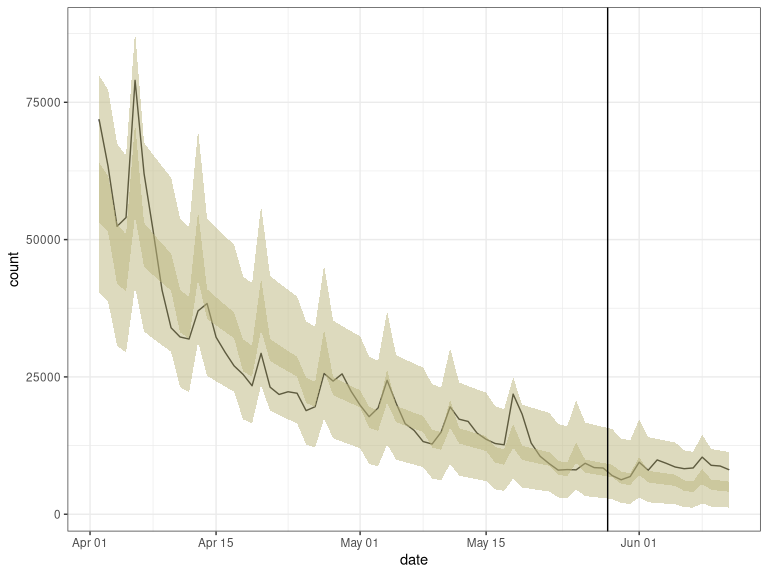

trendeval aims to provide a coherent interface for evaluating models fit with the trending package. Whilst it is useful in an interactive context, it’s main focus is to provide an intuitive interface on which other packages can be developed (e.g. trendbreaker).
Installing the package
You can install the stable version of this package from CRAN with:
install.packages("trendeval")The development version can be installed from GitHub with:
if (!require(remotes)) {
install.packages("remotes")
}
remotes::install_github("reconverse/trendeval", build_vignettes = TRUE)Model selection example
library(dplyr) # for data manipulation
library(outbreaks) # for data
library(trending) # for trend fitting
library(trendeval) # for model selection
# load data
data(covid19_england_nhscalls_2020)
# define a selection of model in a named list
models <- list(
simple = lm_model(count ~ day),
glm_poisson = glm_model(count ~ day, family = "poisson"),
glm_poisson_weekday = glm_model(count ~ day + weekday, family = "quasipoisson"),
glm_quasipoisson = glm_model(count ~ day, family = "poisson"),
glm_quasipoisson_weekday = glm_model(count ~ day + weekday, family = "quasipoisson"),
glm_negbin = glm_nb_model(count ~ day),
glm_negbin_weekday = glm_nb_model(count ~ day + weekday),
will_error = glm_nb_model(count ~ day + nonexistant)
)
# select 8 weeks of data (from a period when the prevalence was decreasing)
last_date <- as.Date("2020-05-28")
first_date <- last_date - 8*7
pathways_recent <-
covid19_england_nhscalls_2020 %>%
filter(date >= first_date, date <= last_date) %>%
group_by(date, day, weekday) %>%
summarise(count = sum(count), .groups = "drop")
# split data for fitting and prediction
dat <-
pathways_recent %>%
group_by(date <= first_date + 6*7) %>%
group_split()
fitting_data <- dat[[2]]
pred_data <- select(dat[[1]], date, day, weekday)
# assess the models using the evaluate_resampling and a variety of metrics
results <- evaluate_models(
models,
fitting_data,
method = evaluate_resampling,
metrics = list(yardstick::rmse, yardstick::huber_loss, yardstick::mae)
)
results
#> # A tibble: 8 x 8
#> model_name model data warning error huber_loss mae rmse
#> <chr> <named > <list> <named l> <named> <dbl> <dbl> <dbl>
#> 1 simple <trndng… <tibble [4… <NULL> <NULL> 6902. 6903. 6903.
#> 2 glm_poisson <trndng… <tibble [4… <chr [43… <NULL> 5193. 5193. 5193.
#> 3 glm_poisson_wee… <trndng… <tibble [4… <chr [1]> <chr [… NA NA NA
#> 4 glm_quasipoisson <trndng… <tibble [4… <chr [43… <NULL> 5193. 5193. 5193.
#> 5 glm_quasipoisso… <trndng… <tibble [4… <chr [1]> <chr [… NA NA NA
#> 6 glm_negbin <trndng… <tibble [4… <NULL> <NULL> 5238. 5238. 5238.
#> 7 glm_negbin_week… <trndng… <tibble [4… <NULL> <chr [… NA NA NA
#> 8 will_error <trndng… <tibble [4… <NULL> <chr [… NA NA NAExample of how this output could then be used
library(tidyr) # for data manipulation
library(purrr) # for data manipulation
library(ggplot2) # for plotting
# Pull out the model with the lowest RMSE
best_by_rmse <-
results %>%
filter(map_lgl(warning, is.null)) %>% # remove models that gave warnings
filter(map_lgl(error, is.null)) %>% # remove models that errored
slice_min(rmse) %>%
select(model) %>%
pluck(1,1)
best_by_rmse
#> $model_class
#> [1] "MASS::glm.nb"
#>
#> $fit
#> function(data) {
#> model <- MASS::glm.nb(formula = .(formula), data = data, ...)
#> model_fit(model, data)
#> }
#> <environment: 0x7de70c0>
#>
#> attr(,"class")
#> [1] "trending_glm_nb" "trending_model"
# Now let's look at the following 14 days as well
new_dat <-
covid19_england_nhscalls_2020 %>%
filter(date > "2020-05-28", date <= "2020-06-11") %>%
group_by(date, day, weekday) %>%
summarise(count = sum(count), .groups = "drop")
all_dat <- bind_rows(pathways_recent, new_dat)
out <-
best_by_rmse %>%
fit(pathways_recent) %>%
predict(all_dat) %>%
as_tibble()
out
#> # A tibble: 71 x 9
#> date day weekday count estimate lower_ci upper_ci lower_pi upper_pi
#> <date> <int> <fct> <int> <dbl> <dbl> <dbl> <dbl> <dbl>
#> 1 2020-04-02 15 rest_of_… 71917 54614. 49046. 60813. 33412 80753
#> 2 2020-04-03 16 rest_of_… 63365 52856. 47603. 58689. 33201 76164
#> 3 2020-04-04 17 weekend 52412 51155. 46200. 56641. 32670 73787
#> 4 2020-04-05 18 weekend 54014 49509. 44838. 54666. 31608 71643
#> 5 2020-04-06 19 monday 78996 47915. 43515. 52761. 29932 69786
#> 6 2020-04-07 20 rest_of_… 62026 46373. 42229. 50925. 29923 69140
#> 7 2020-04-08 21 rest_of_… 51692 44881. 40979. 49155. 28976 65417
#> 8 2020-04-09 22 rest_of_… 40797 43437. 39765. 47448. 27354 64013
#> 9 2020-04-10 23 rest_of_… 33946 42039. 38585. 45802. 26546 60591
#> 10 2020-04-11 24 weekend 32269 40686. 37437. 44216. 25768 58520
#> # … with 61 more rows
# plot output
ggplot(out, aes(x = date, y = count)) +
geom_line() +
geom_ribbon(mapping = aes(x = date, ymin = lower_ci, ymax = upper_ci),
data = out, alpha = 0.5, fill = "#BBB67E") +
geom_ribbon(mapping = aes(x = date, ymin = lower_pi, ymax = upper_pi),
data = out, alpha = 0.5, fill = "#BBB67E") +
geom_vline(xintercept = as.Date("2020-05-28") + 0.5) +
theme_bw()
Resources
Getting help online
Bug reports and feature requests should be posted on github using the issue system. All other questions should be posted on the RECON slack channel see https://www.repidemicsconsortium.org/forum/ for details on how to join.